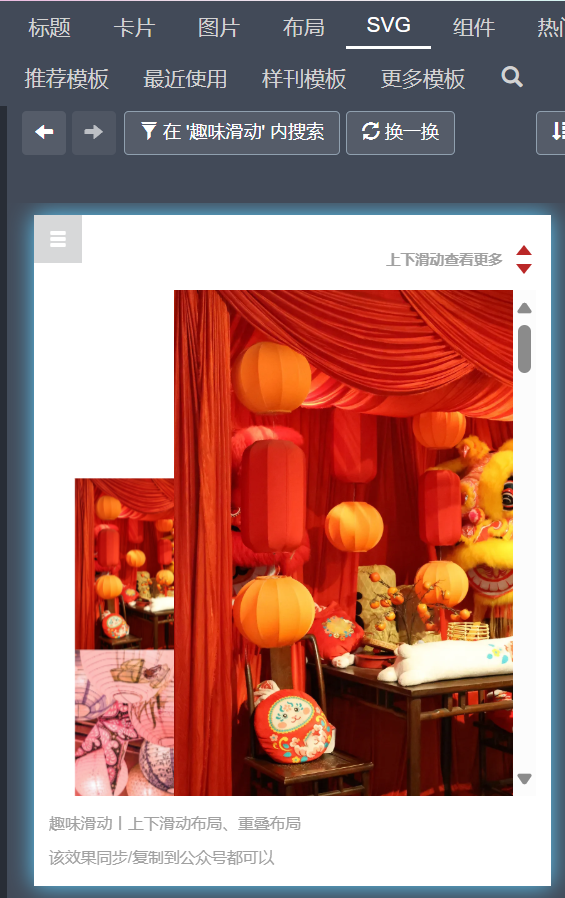

🎨 模板挑选指南
1. 为什么要选好的模板
- 对轻度创作者来说，模板直接决定了推文的上下限。
- 好模板自带清晰结构 🧩 和 吸睛设计 👀。
- 选择好的模板，就是站在前人的肩膀上。即使没有设计基础，也能高效、轻松地做出优质推文。
2. 主题检索
👉 步骤：点击上方 风格排版 → 确认会员状态 → 在价格栏开启 会员模板。

🔍 检索方式
- 在分类栏中，秀米提供了：用途、行业、节假、风格、色调 等分类。
- 也可以直接在 搜索栏 输入关键词。
⚠️ 注意
限定词不要过多，否则可能导致检索结果过少，甚至完全没有结果。

💡 小技巧：付费模板素材也可以通过 复制 的方式使用。

3.主题分类
宣传部的工作涉及多种主题，以下是常见分类与挑选要点：
🚩 党团类
🔑 检索技巧
- 行业选择：党政
- 搜索关键词：党日、党课、传承、英烈
- 颜色主题：建议使用 红/黄，避免过于花哨，突出严肃性

🎉 活动类检索
📌 两类活动
-
活动招募 / 部门招新
👉 目标：吸引同学报名。
✅ 重点：封面和开头足够吸引人。
（有时甚至不需要正文，只要封面、时间地点和QQ群信息即可） -
活动总结
👉 目标：展示成果。
✅ 重点：模板能容纳足够的活动图片。
🔑 检索技巧
- 按题材：体育比赛、文艺演出、演讲、棋类等
- 按颜色：足球用绿色，游泳用蓝色
- 按时间：中午、晚上、春季、秋季
- 按节日：中秋节、国庆节、端午节
- 按物品：西瓜游园 → 西瓜；羽毛球赛 → 羽毛球
4.如何筛选好模板
📈 查看阅读量
模板左上角会显示 阅读量，一般来说数值高的更受欢迎。

🖼️ 看封面
- 封面能打动你，往往也能打动大众。
- 即使内容一般，好封面也能单独利用。

👉 右图比左图更吸引人，因此点击量更高。
🔍 预览细节
点击模板预览时，优秀模板通常具有：
- 🌟开头精美：封面吸引人
- 🪄 设计新颖：辨识度高
- 🎨色彩丰富：颜色搭配合理，而非单一

- 📑 结构清晰：有多级标题

- 🔧 适配性高：主题不局限，便于修改与结合

🚫 避坑指南
⚠️ 注意
1. 就像买书桌的商家都会在卖家秀都会书桌上摆满一台昂贵的电脑，模板创作者也往往会配上极精美的图片和文案，让图文去拔高模板。 然而实际的图往往一般，反而需要模板去填补图片的不足 1. 极简风格 / 高度风格化模板 → 慎用！个性强但适配性低，不易驾驭。
💡 这类模板常是 甜蜜陷阱 → 一换图效果天差地别，不如用通用模板。

5.整合思维
🔗 多模板结合
现实中，少有模板能满足所有要求。
👉 解决办法：多选几个模板 → 取长补短。
操作方法：
Ctrl+C 复制 → 切换目标模板 → Ctrl+V 粘贴。

模板的风格与色调应保持统一/相近/互补，避免突兀。

warning ⚠️ 提醒
秀米模板有储存上限，完成排版后请及时删除多余模板。

🛠️ 排版时调用模板
如果还没选到合适模板，或图片过多时，可以在 排版阶段临时选择模板。
操作路径：进入模板编辑 → 点击左上角 图文模板。

此处检索的技巧基本一样，不多赘述，着重说明下分类栏所代表的意思。
📂 分类栏说明
- 标题：一、二、三级标题

- 卡片：放置文字

- 图片：单图/多图组合

- 布局：图文组合排版

- SVG：交互组件（滑动、展开、跳转、答题等）

作者：杜若冰 润色：chatgpt 参考文献：无